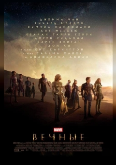

Вечные

Описание
Вечные — представители расы генетически улучшенных суперлюдей, тайно живущих на Земле. Они появились на свет 5 миллионов лет назад в результате экспериментов могущественных целестиалов. Наделённые невероятными суперспособностями, на протяжении тысячелетий они скрывались от человеческой цивилизации, втайне защищая людей от монструозных девиантов. Однако, последние события и действия Таноса заставили их выйти на свет.
Вернуться на главную